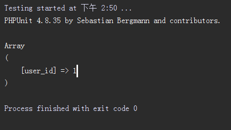

单元测试
在前后端分离的团队开发中，单元测试对于后端开发，可以不需要联调就能测试自己的代码逻辑，比较重要。
1、如何使用单元测试
首先，我们需要安装单元测试程序，比如PHPUnit，安装过程请看官方教程。
然后就按照下面的方法开始单元测试。
2、如何开始单元测试
在单元测试时，最主要的问题是如何加载框架，从而在单元测试的代码中能够使用框架。
加载框架，要用到\Ocara\OcaraInvoke类。
（1）要加载框架的system/library/OcaraInvoke.php文件，如下实例:
/*
require_once __DIR__ . '/../../vendor/linyihu/ocara/system/library/OcaraInvoke.php';
（2）要使用OcaraInvoke::init()方法初始化。
init(rootPath, fileSelf)
参数说明：
| 名称 |
描述 |
| rootPath |
必需。指定当前web应用。 |
| fileSelf |
必需。指定当前单元测试文件，一般只要使用__FILE__即可。 |
实例如下：
require_once __DIR__ . '/../../vendor/linyihu/ocara/system/library/OcaraInvoke.php';
OcaraInvoke::init(__DIR__.'/../', __FILE__);
（3）在单元测试代码中可以使用框架
除了使用框架中的相关类和函数，可以使用Call::run()来执行某一个控制器动作。
Action有返回值，如下实例：
$users = Call::run('home/getUsers');
Action无返回值，如下实例：
OcaraInvoke::run('home/index', array(), false);
3、实例
假设已经安装了PHPUnit，在我们的应用根目录中新建tests目录，里面添加一个OneTest.文件，截图如下：
 文件内容如下:
文件内容如下:
use Ocara\OcaraInvoke;
use Ocara\Call;
require_once __DIR__ . '/../../vendor/linyihu/ocara/system/library/OcaraInvoke.php';
OcaraInvoke::init(__DIR__.'/../', __FILE__);
class OneTest extends PHPUnit_Framework_TestCase
{
public function testA()
{
$result = Call::run('User/view', array('user_id' => 1));
ocPrint($result);
}
}
然后，新建home控制器的index动作。
namespace Controller\User\Action;
use Controller\User\UserController;
use Model\Users;
class ViewAction extends UserController
{
/**
* 初始化
*/
public function _action()
{
$user_id = $this->request->getGet('user_id');
$users = Users::select(1, 'user_id');
return $users->getData();
}
}
最后，使用编辑器（这里假设使用的是phpstorm）来运行该testA()方法.
将鼠标指针放到testA()方法中，并且右击选择“Run OneTest.testA”运行，就可以看到该单元测试运行结果，打印出user_id为1的记录数据。
